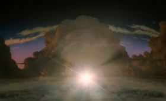

Twelve Tales Told (3D)
Johann Lurf
Österreich 2014
4 min – HD – no dialogues
Concept: Johann Lurf – S: Sixpackfilm
"Johann Lurf’s maximalist barrage of Hollywood studio logos, transforms the iconic corporate prelude to the big production-to-come into a sustained, stuttering spectacle in which fractured and fantastical worlds collide into a bombastic anti-climax. Like a riff on Jack Goldstein’s looping Metro-Goldwyn-Mayer, 1975, Twelve Tales Told has an aggressive musicality that resonates with our sonic memory, and rather ingeniously creates desire for the dominion that is Hollywood." – Andréa Picard
thursday 8 okt 8.00 pm filmmuseum münchen – opening
Johann Lurf born in Vienna in 1982. Since 2002 he has studied at Vienna´s Academy of Fine Arts. 2009 diploma at Harun Farocki´s filmclass. Lives and works in Vienna.
Films (selection) Vertigo Rush 2007 – 12 Explosionen 2008 (4. UX) – Zwölf Boxkämpfer jagen… 2009 (5. UX) – Endeavour 2010 – Kreis Wr.Neustadt 2011 (5. UX) – Reconnaissance 2012 (8. UX) – Embargo 2014 (10. UX) – Twelve Tales Told 2014